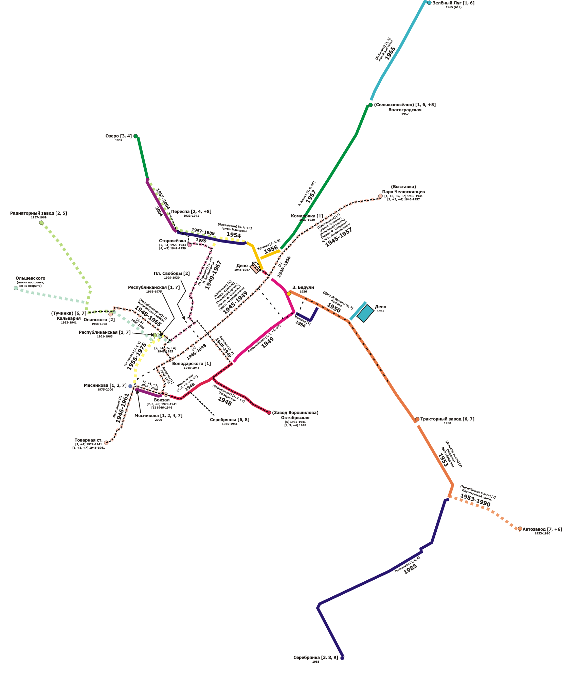

Автобус
Автобусное движение в Минске было открыто 23 октября 1924 года, тогда рейсы выполняли автобусы зарубежного производства марок Ford, Leyland, FIAT, M.A.N, Renault, Steyr. С мая 1925 года выполняются междугородные рейсы. С конца 20-х парк автобусов начал пополняться отечественной техникой, в частности автобусами на шасси грузовых автомобилей АМО и Я-6, позже это были автобусы типа ЗИС-8. С 1940 года стали появляться более современные ЗИС-16. Во время Великой Отечественной войны автобусное хозяйство города было практически полностью уничтожено. После войны автобусное хозяйство стало восстанавливаться. На 1946 год автобусный парк города состоял из 17 трофейных машин и четырех ЗИС-16. В 1947 году в районе улицы Дачной (ныне Маяковского) был открыт автобусный парк №1. С 1947-48 годах парк стал обновляться за счёт новых автобусов модели ЗИС-154 и ленинградских машин АТУЛ, а на менее загруженных маршрутах работали автобусы типа ГЗА-651. С 1949 года началась поставка автобусов ЗИС-155. Эти машины стали основными на последующее десятилетие. С 1959 года в автобусные парки столицы начали поступать машины ЛАЗ-695Б и ЗиЛ-158. В конце 1967 года на маршруты города выехали автобусы особо большой вместимости Ikarus-180. Они работали на наиболее протяженных маршрутах, таких как: 1, 2, 3, 13, 16. С 1969 года к ним прибавились автобусы ЛиАЗ-677, а с 1970-го Ikarus-556. С 1973 года появились новые модели Ikarus-260, а спустя два года модель 280. Прежние модели венгерских автобусов 180 и 556 проработали в городе до самого конца 70-х. Начиная с конца 90-х парк автобусов города стал обновляться в основном за счёт отечественных машин марки МАЗ. Сегодня автобусный парк Минска на 100% состоит из машин этой марки. На 2010 год в Минске функционируют более 1800 единиц муниципальных автобусов, обеспечивающих 167 городских автобусных маршрутов. В городе действуют 5 автобусных парков, автовокзалы «Центральный» и «Восточный». Городское автобусное движение в Минске (также как междугородное автобусное, троллейбусное, трамвайное и метрополитен) управляется коммунальным унитарным предприятием «Минсктранс».
ТроллейбусПервая очередь троллейбусной линии была сдана в эксплуатацию 19 сентября 1952 года, она связывала пассажирский вокзал с Круглой площадью. Общая протяжённость по маршрутному кольцу составила более 6 километров, а на линии работали 6 троллейбусов. К 1956-му году протяжённость троллейбусных маршрутов составила 16 километров, в эксплуатации находились 39 троллейбусов. К 1961-му году в Минске действовало 6 троллейбусных линий, а троллейбусный парк насчитывал 100 машин. Осенью 1966 года в Минске первым в СССР был перенят передовой опыт киевлян. Началась эксплуатация троллейбусных поездов Владимира Веклича. Они состояли из двух машин МТБ-82. В 1971 году было открыто троллейбусное депо № 2. В 1979 троллейбусное депо № 3, с 1985 троллейбусное депо № 4 и в 1988-м троллейбусное депо № 5. В разное время в Минске эксплуатировались троллейбусы производства СССР: МТБ-82Д (1952—1972) — 94 машины; ЗиУ-5 и его модификации (1964—1987) — 270 машин; СВАРЗ-ВСХВ, СВАРЗ-МБТЭС (1960—начало 1970-х) ЗиУ-682 (ЗиУ-9) и его модификации (1973—2009); ЗиУ-683 (ЗиУ-10)-(1992—2007), ТролЗа-6205 (1993—2014) — 5 машин; Киев-11 (1992—2006) — 3 машины; ЮМЗ Т1 (1993—2009) — 5 машин;
ТрамвайИдея строительства конной железной дороги в Минске появилась ещё в середине 70 годов XIX века. Когда с развитием железнодорожного транспорта в Российской империи и появлении в Минске 2 железнодорожных вокзалов, Брестского и Либаво-Роменсокго остро встал вопрос о перемещении пассажиров между ними. Первая практическая идея о строительстве конки в Минске появилась в 1887 году. Это была частная инициатива и исходила от Оршанского купца Сергея Самуиловича Пергамента. В том же 1887 году его проект был утверждён и подписан. На практическую реализацию проекта ушло 5 лет. Торжественное открытие произошло 10 мая 1892 года. К январю 1913 года, в обслуживании минской конки было задействовано 99 лошадей. В специальной конюшне на улице Базарной в штате обслуги были конюхи и ветеринары. в 1921 году минская конка была восстановлен после 3 летнего перерыва и именовалась уже красной конкой в соответствии с веяниями времени. Тогда же было создано Объединенное управление местного транспорта Белоруссии. В которое в том числе вошли: два вагонных парка один из которых находился на улице Базарной. 170 лошадей, и 2 хозяйства для обслуживания имеющегося имущества. Людамонт и Михалово Идея об организации в Минске трамвайного движения зародилась ещё в 1898 году. Однако только в 1911 году государственная дума инициировала привлечение частных средств в размере миллиона рублей для появления в городе трамвайного транспорта. 6 октября на заседании городской думы было принято окончательное решение о строительстве в городе трамвайных путей. где так же было решено что строительство будет целиком под руководством властей города. Изначально планировалось несколько вариантов маршрутов по которым должны были пойти минские трамваи. Линия от брестского вокзала до золотой горки, протяжённостью в 4,6 км. Также от скотобойни до Сторожёвского кладбища длинной в 4,8 км. Также планировалась линия от ляховки до Юбилейной площади. Территорию под трамвайный парк выделялась на современной улице Долгобродской, на месте тогда существовавшего конного рынка, перенесённого на место где сейчас находится первый троллейбусный парк. Первоначальный подвижной состав должен был состоять из 14 моторных и 3 прицепных вагонов вместимостью от 14 до 18 пассажиров. Окончательный план строительства был утверждён 27 ноября 1913 года, и было начато строительство. По планам движение трамваев должно было начаться в ноябре 1914 года, чему помешала первая мировая война. К планам строительства минского трамвая вернулись лишь в 1925 году.  Система электрического трамвая в Минске была открыта 13 октября 1929 года. На момент открытия она включала в себя два маршрута: «Товарная станция» — «Комаровка» (проходил по Московской ул., просп. Независимости до пл. Якуба Коласа и включал в себя 13 остановок — 9 постоянных и 4 по требованию) «Вокзал» — «площадь Свободы» (проходил от железнодорожного вокзала по ул. Ленинградской и Свердлова, просп. Независимости и ул. Ленина; включал 3 остановки, 2 из них постоянные). На этих линиях использовались вагоны Х производства Мытищинского завода. Выпуск составлял 5 вагонов. Уже в первый год существования трамваем было перевезено 11 миллионов пассажиров. В 1929 году была построена линия от площади Свободы по улицам Максима Богдановича и Киселёва до ДС «Сторожёвка» (в районе пересечения с ул. Кропоткина). В 1930 линия по проспекту Независимости была удлинена до Парка Челюскинцев (в то время ДС «Выставка»). Разворотное кольцо находилось на площади Калинина. В том же году закрылась ДС «Площадь Свободы», а разворачивавшийся там маршрут № 2 продлили до ДС «Сторожёвка». В 1932 построена линия от проспекта Независимости по ул. Энгельса, Ульяновской и Октябрьской до станции «Завод Ворошилова» (ныне «Октябрьская улица»). За 1932 год Минский трамвай перевёз 22 миллиона пассажиров — в два раза больше, чем в 1930. В 1933 году в Минске были построены две новые трамвайные линии. Одна из них продлевала линию от ДС «Сторожёвка» по ул. Кропоткина, просп. Машерова и ул. Даумана до ДС «Переспа» (в районе пересечения с ул. Веры Хоружей). Вторая проходила по ул. Володарского, Городской Вал, Романовская слобода, Кальварийская и Короля до ДС «Кальвария». Благодаря этим расширениям трамвайный парк увеличился до 43 вагонов. В 1935 была построена линия от железнодорожного вокзала по ул. Свердлова приблизительно до территории современного Червенского рынка. Существует информация, что в начале 1940-х годов велось строительство линии по Провиантской улице (ныне ул. Захарова), но никаких официальных документов, посвящённых этой линии, в открытом доступе не сохранилось, а во время войны недостроенная линия была полностью уничтожена. С началом великой отечественной войны в Минске было полностью прекращено трамвайное движение. В начале мая 1943 года (по другим данным, в конце августа) в оккупированном Минске нацисты восстановили трамвайное движение. На линии работали 4 вагона, ходившие только по одному маршруту: «Товарная станция» — «Выставка». При отступлении из Минска немцы разобрали часть путей, сняли контактную сеть, вывезли оборудование тяговой подстанции. В результате бомбардировок было разрушено здание трамвайного парка, уничтожен остаток линий и подвижной состав. Восстановление трамвайной сети началось в октябре 1944. До февраля 1945 года, когда в город поступило 10 вагонов КМ с прицепами и дореволюционные, выпуска 1907 года, трамваи серии Ф, в Минске не было ни одного трамвая. Последний вагон Ф был списан 29 декабря 1964 года. 1 мая 1945 было торжественно открыто трамвайное движение на участке по проспекту Независимости от ул. Володарского до парка Челюскинцев. Также было открыто первое Минское трамвайное депо, которое расположилось на пересечении современных проспектов Машерова и Независимости. В следующем году завершилась постройка линии от Товарной станции по Московской и Бобруйской улицам до железнодорожного вокзала и оттуда, по Ленинградской ул. и ул. Свердлова, до просп. Независимости. Также в 1948 были восстановлены линии по улицам Энгельса, Ульяновской и Октябрьской, а также по ул. Володарского, Романовская слобода и Кальварийской до ДС «Опанского» (предположительно в районе пересечения с ул. Клары Цеткин). Вдобавок к этому была построена линия от железнодорожного вокзала по ул. Бобруйской и Ульяновской до Октябрьской улицы. Не обошёлся 1948 год и без потерь: линия, проходившая по просп. Независимости от ул. Володарского до ул. Энгельса, была разобрана. 1949 год, год 20-летия минского электрического трамвая, стал не менее насыщенным событиями, чем 1948. Была восстановлена линия по улицам Интернациональной, Максима Богдановича и Киселёва до ДС «Сторожёвка»; построена линия от проспекта Независимости по ул. Козлова, Змитрока Бядули и Первомайской до пересечения с улицей Энгельса. Также были разобраны линия по улице Энгельса, просуществовавшая только один год, и линия по проспекту Независимости (от просп. Машерова до ул. Энгельса). В 1950 году было открыто движение по новой, почти 3,5-километровой линии, проходящей от площади Змитрока Бядули по улицам Козлова и Долгобродской до ДС «Тракторный завод». В 1953 году эта линия была продлена по улице Долгобродской и Партизанскому проспекту до ДС «Автозавод». Также в 1950-е — 1960-е годы существовала линия, которая проходила от просп. Независимости по ул. Петруся Бровки до располагавшейся там железнодорожной ветки. В 1954 завершилось строительство линии по просп. Машерова от проспекта Независимости до ул. Максима Богдановича, с заходом на последнюю. В 1955 была построена линия по ул. Мясникова от Бобруйской ул. до ул. Городской Вал, а также разрушена линия по ул. Володарского, просп. Независимости, ул. Свердлова и Ленинградской до железнодорожного вокзала. Основной моделью минского трамвая в 1950-е годы стал усть-катавский КТМ-1. 99 таких трамваев эксплуатировались до 1975 года. С середины 1950-х годов до 1979 года в Минске эксплуатировалось 46 рижских трамваев МТВ-82. В конце 1950-х — начале 1960-х годов к списку моделей трамваев, эксплуатировавшихся в Минске, добавились два весьма редких вагона: ленинградский трёхдверный ЛМ-49 и киевский КТВ-55. До наших дней в Минске сохранился ЛМ-49, который сейчас, в неходовом состоянии, находится на территории трамвайного парка и используется в качестве вагона-музея. В 1956 году завершилась постройка разворотного кольца «Площадь Змитрока Бядули». Также в этом году была разобрана небольшая часть линии по проспекту Независимости от ул. Козлова до площади Якуба Коласа. Вместо неё построили линию по улице Красная. Следующий, 1957 год стал одним из самых успешных для трамвая: были построены две почти 3-километровые линии (первая от ул. Максима Богдановича по просп. Машерова, ул. Даумана и Старовиленской до ДС «Озеро», а вторая от пл. Якуба Коласа по одноимённой улице до ДС «Волгоградская») и 2,5-километровая линия от ДС «Опанского» по ул. Короля, Дрозда, пер. Тучинского и ул. Тимирязева до ДС «Радиаторный завод», которая располагалась в районе пересечения с улицей Сапёров. Также была уничтожена линия от пл. Якуба Коласа до парка Челюскинцев по проспекту Независимости. В 1958 уничтожена ДС «Опанского». Разворачивавшийся на ней маршрут № 2 продлён до ДС «Радиаторный завод». В 1961 на пересечении ул. Мясникова и Городской Вал открылась ДС «Республиканская». В том же году разрушена линия от Товарной станции по Московской ул. до ул. Мясникова. Предположительно в 1964 году была построена линия от переулка Тучинского по улицам Кальварийской и Ольшевского до ДС «Ольшевского», которая, по некоторым данным, располагалась в промежутке между домом № 29 и проспектом Пушкина. Линия была полностью закончена и готова к эксплуатации. Тем не менее, пассажирское движение по ней открыто не было, и в скором времени линия была разобрана. В 1965 году линия по ул. Якуба Коласа была продлена по ул. Логойский тракт до ДС «Зелёный луг». Также взамен разобранной линии по улицам Кальварийская и Романовская слобода построена линия по ул. Короля. В 1967 трамвайный парк, вынужденный в течение 15 лет соседствовать в одном помещении с троллейбусным, переехал в новое, отдельное здание на улице Ботанической. Старый парк на пересечении проспектов Машерова и Независимости был полностью отдан под троллейбусы, вплоть до 2006 года, когда было принято решение о его переносе на новую территорию в Уручье. В ближайшее время на старой территории планируется масштабное строительство, а пока там располагается платная автостоянка. В течение 15 лет после этого события расширение трамвайной сети в Минске не производилось. Наоборот, шло её активное уменьшение: так, в 1967 году была разрушена линия по улицам Максима Богдановича и Интернациональной, в 1969 — от ул. Мясникова по ул. Короля, Дрозда, пер. Тучинского и ул. Тимирязева до ДС «Радиаторный завод», в 1975 — по ул. Мясникова от ул. Бобруйской до ДС «Республиканская». Единственным расширением сети в то время является открытие в 1975 году ДС «Площадь Мясникова». Наконец, в 1982 году была построена небольшая линия от ул. Первомайской по ул. Чапаева и Платонова до ул. Козлова. Первого «большого» строительства пришлось ждать ещё 3 года: в 1985 трамвайная сеть Минска увеличилась на 4,4 км — открылось движение на участке от Партизанского проспекта по улицам Плеханова и Якубова до ДС «Серебрянка». В середине 1980-х годов были утверждены планы строительства линии в микрорайон Чижовка, от ДС «Автозавод» по ул. Кабушкина и Ташкентской, и линии от ДС «Площадь Мясникова» по улицам Клары Цеткин и Кальварийской. Но проведение перестройки, а после и развал СССР помешали осуществлению этих планов. В 1989 линию по просп. Машерова (от ул. Куйбышева до ул. Даумана) перенесли на выделенное полотно. В 1990, в связи с началом строительства метро, было остановлено движение на линии по Партизанскому проспекту. Первоначально предполагалось восстановить трамвайное движение после окончания строительства, но вскоре от этих планов было решено отказаться и линия была разобрана. С 1966 года основным трамваем Минска был рижский РВЗ-6 и его модификации РВЗ-6М и РВЗ-6М2. Всего в Минске было 268 таких вагонов. В 1979—91 годах РВЗ-6 был единственным трамваем Минска. Вывод этих вагонов из эксплуатации начался в начале 2000-х годов и окончательно завершился к концу 2008 года. В 1991 году на минских линиях появились 24 чехословацких трамвая Tatra T6B5. В 1999—2003 годах 15 вагонов РВЗ-6 прошли реконструкцию в трамвайном парке, во время проведения которой на вагоны были установлены новые кузова производства Дзержинского экспериментально-механического завода. Эти вагоны получили новый индекс РВЗ-ДЭМЗ. Как и не реконструированные «рижане», все «ДЭМЗы» были списаны к 2008 году. В 2000 году, впервые за много лет, в трамвайную сеть Минска были внесены небольшие изменения: линию по ул. Бобруйской перенесли на выделенное полотно и немного укоротили: ранее располагавшаяся за Московской улицей (около дома № 3 по улице Клары Цеткин) ДС «Мясникова» была перенесена на новое место — теперь она находится в сквере перед Московской улицей. Тогда же на улицах появились новые белорусские вагоны АКСМ-1М, через год переродившиеся в АКСМ-60102. В сентябре 2002 года из немецкого города Карлсруэ прибыло 10 трамваев DWM GT8M, выпущенных в 1969 и 1970 годах. Эти вагоны были переданы Минску безвозмездно: руководство Карлсруэ пришло к выводу, что отдавать старые вагоны выгоднее, чем оплачивать их утилизацию. Сперва Минск планировал взять в Германии 100 таких трамваев, но от этих планов было решено отказаться в пользу приобретения вагонов белорусского производства. Также в городе появился экспериментальный трёхсоставный вагон АКСМ-743, так и оставшийся в единственном экземпляре. Последнее на настоящий момент изменение трамвайной сети было в 2004 году, когда линию по ул. Даумана перенесли на выделенное полотно. В 2008 году Белкоммунмаш развил идею модели 743 в новых вагонах АКСМ-843. Первый такой состав начал эксплуатироваться в июне 2009 года. С началом производства АКСМ-843 трамваи GT8D в количестве 9 вагонов были списаны, а один — оставлен для музея. C 2009 года началось активное списание трамваев Tatra T6B5. К 2012 году в Минске остался только один такой вагон, находящийся в музее. Шесть списанных T6 были проданы в трамвайный парк Екатеринбурга, четыре — в Нижний Новгород и три — в Самару. В 2015 году в связи с крайне низким пассажиропотоком был закрыт маршрут №2 и движение трамвая по улице Октябрьской. В 2018 году, во время реконструкции путей стрелка на улицу была полностью демонтирована. марта 2018 года началась реконструкция трамвайных путей Площади Мясникова до улицы Захарова, во время реконструкции ветка по улице Октябрьской была отрезана от остальной сети, на всех остановочных пунктах кроме Свердлова и Захарова были организованы рефюжи с высокой платформой, из-за чего при использовании низкопольных трамваев отсутствует ступенька, был использован новый дизайн остановочных павильонов, в которые были встроены информационные панели. Сроки окончания реконструкции неоднократно переносились, в итоге ветка должна быть открыта 1 ноября 2018. На данный момент в генеральном плане города Минска до 2020 года заложена линия в Серебрянку через улицу Октябрьскую, Тростенецкую, проспект Рокоссовского и улицу Малинина, в плане до 2030 года заложены линии по улице Нововиленской от улицы Старовиленской до переулка Червякова, с ликвидацией ДС "Озеро" и линии на улице Старовиленской от улицы Нововиленской до улицы Щедрина, линии по улице Клары Цеткин, улице Темирязева и проспекту Машерова до улицы Даумана, линии в Сухарево по улицам Харьковской, Пономаренко, Шаранговича. Водителем трамвая в Минске можно стать, закончив курсы водителя, которые организует филиал «Трамвайный парк» и Учебный центр КУП «Минсктранс». После прохождения медкомиссии, подтверждающей пригодность к этой работе, и конкурса курсант проходит обучение (теория, учебная езда, ПДД, стажировка) курс которого длится шесть месяцев. После чего курсанту присваивается 3-й класс водителя трамвая и он допускается к самостоятельной работе на пассажирском подвижном составе.
Метрополитен{kind=link}
 История минского метрополитена начинается в конце 1960-х годов. В то время в СССР метро строили в городах с населением не менее миллиона человек. После окончания Великой Отечественной войны Минск рос быстрее всех других крупных городов СССР (в основном благодаря быстрому развитию промышленности), уже в 1972 году в городе родился миллионный горожанин. К 1970 году ощущались большие трудности в перевозке людей (исчерпали свою пропускную способность ряд основных магистралей). Рассматривались три варианта развития транспортной системы: автобус-экспресс, скоростной трамвай и метрополитен, который и был выбран.
Разработка плана для строительства метрополитена в Минске началась в 1976 году. План строительства восьмистанционной линии был одобрен Советом Министров СССР 4 февраля 1977 года. 16 июня 1977 года была заложена первая свая в основание будущей станции «Парк Челюскинцев». Строительство первой линии метрополитена от станции «Институт культуры» до станции «Волгоградская» (впоследствии — «Московская») длилось с 1977 по 1984 год.
Открытие метро состоялось 30 июня 1984 года, в канун 40-й годовщины освобождения Минска от немецких захватчиков в годы Великой Отечественной войны. (дальнейшую информацию см. в разделе про линии.)
В 2014 году, в связи с 30-летним юбилеем предприятия, Минский метрополитен стал лауреатом Международной транспортной премии «Золотая колесница» в номинации «Лучшее предприятие общественного пассажирского транспорта»
История минского метрополитена начинается в конце 1960-х годов. В то время в СССР метро строили в городах с населением не менее миллиона человек. После окончания Великой Отечественной войны Минск рос быстрее всех других крупных городов СССР (в основном благодаря быстрому развитию промышленности), уже в 1972 году в городе родился миллионный горожанин. К 1970 году ощущались большие трудности в перевозке людей (исчерпали свою пропускную способность ряд основных магистралей). Рассматривались три варианта развития транспортной системы: автобус-экспресс, скоростной трамвай и метрополитен, который и был выбран.
Разработка плана для строительства метрополитена в Минске началась в 1976 году. План строительства восьмистанционной линии был одобрен Советом Министров СССР 4 февраля 1977 года. 16 июня 1977 года была заложена первая свая в основание будущей станции «Парк Челюскинцев». Строительство первой линии метрополитена от станции «Институт культуры» до станции «Волгоградская» (впоследствии — «Московская») длилось с 1977 по 1984 год.
Открытие метро состоялось 30 июня 1984 года, в канун 40-й годовщины освобождения Минска от немецких захватчиков в годы Великой Отечественной войны. (дальнейшую информацию см. в разделе про линии.)
В 2014 году, в связи с 30-летним юбилеем предприятия, Минский метрополитен стал лауреатом Международной транспортной премии «Золотая колесница» в номинации «Лучшее предприятие общественного пассажирского транспорта»
- 3 мая 1977 года в районе будущей станции «Парк Челюскинцев» начались первые работы
- 30 июня 1984 года открыт первый участок "Институт культуры-Московская"
- 31 декабря 1986 года "Московская-Восток"
- 31 декабря 1990 года "Фрунзенская-Тракторный завод"
- 28 мая 1991 года "Первомайская"
- 3 июля 1995 года "Фрунзенская-Пушкинская"
- 7 ноября 1997 года "Тракторный завод-Автозаводская"
- 5 сентября 2001 года "Автозаводская-Могилёвская"
- 7 ноября 2005 "Пушкинская-Каменная Горка"
- 7 ноября 2007 года "Восток-Уручье"
- 7 ноября 2012 года "Институт культуры-Петровщина"
- 3 июня 2014 года "Петровщина-Малиновка"
- В перспективе возможно продление первой линии на северо-восток станцией "Смоленская" и на юго-запад станцией "Щомыслица"
- Возможно продление второй линии на юго-восток до "Шабанов". Сроки строительства не определены. И станцией метро "Красный бор (Виленская)"
- 3-я линия протяжённостью 17,2 км с 14 станциями свяжет микрорайон Зелёный Луг через центр города с микрорайоном Курасовщина. Первую очередь третьей линии метрополитена планируется ввести в строй в 2020 году. Этот участок будет включать четыре станции («Вокзальная», «Площадь Богушевича», «Юбилейная площадь», «Ковальская Слобода»), две из них пересадочные. В 2018 году начаты работы по продлению линии в направлении станции «Слуцкий Гостинец». Возведение всей линии планируется завершить в 2026—2028 годы. Подготовительные работы по строительству третьей линии начаты во второй половине 2013 года. Станция «Юбилейная площадь» строится на глубине 32 метра, благодаря чему она станет самой глубокой во всём метрополитене. Третью линию планируется оснастить автоматизированными поездами, которые смогут курсировать без машиниста, а также станциями закрытого типа и траволатором длиной 100 метров и скоростью движения 1 м/с в переходе между станциями. Названия будущих станций первой участка третьей линии утверждены решением Минского городского исполнительного комитета от 21 мая 2012 г. № 1561: станция, расположенная на пересечении Автозаводской и третьей линий метро на Юбилейной площади — «Юбилейная площадь»; станция, расположенная на пересечении улиц Клары Цеткин и Немиги на площади Богушевича — «Площадь Франтишка Богушевича»; станция, расположенная на пересечении Московской и третьей линий метро у железнодорожного вокзала (станция будет располагаться с южной стороны вокзала) — «Вокзальная»; станция, расположенная на пересечении улиц Жуковского и Воронянского — «Ковальская Слобода»; станция, расположенная на территории закрытого аэропорта «Минск-1» — «Аэродромная»; станция, расположенная на пересечении улиц Кижеватова и Осиповичской — «Неморшанский сад»; станция, расположенная на пересечении улиц Кижеватова и Корженевского — «Слуцкий гостинец». Названия станций второго участка утверждены решением Минского городского исполнительного комитета от 14 июля 2016 г. № 2008: станция, расположенная на пересечении просп. Победителей и ул. Мельникайте — «проспект Победителей»; станция, расположенная на пересечении просп. Машерова и ул. Кропоткина — «проспект Машерова»; станция, расположенная на пересечении ул. Максима Богдановича и ул. Веры Хоружей — «улица Максима Богдановича»; станция, расположенная на пересечении ул. Максима Богдановича и ул. Сурганова — «площадь Бангалор»; станция, расположенная на пересечении ул. Максима Богдановича и ул. Халтурина — «улица Мележа»; станция, расположенная на пересечении ул. Широкой и ул. Восточной — «улица Кольцова»; станция, расположенная на пересечении Логойского тракта и ул. Гамарника — «Зеленый Луг». При строительстве 3-й линии планируется снести около 140 зданий. Все станции 3-й линии, за исключением «Жуковского», будут оснащены эскалаторами, а пересадочные узлы – пассажирскими конвейерами (траволаторами) белорусского производства. В соответствии с действующими нормами, для лиц с ограниченными возможностями предусматривается установка вертикальных подъемников (лифтов), которыми смогут воспользоваться все пассажиры.
- Планируется, что 4-я линия минского метро протянется на 37 км и будет состоять из 21 станции. Линия будет проходить от площади Бангалор под ул. Сурганова через пересадочную станцию «Академия наук», далее под ул. Ботанической, ул. Уральской, пересечётся на станции «Тракторный завод» со второй линией и пройдёт через микрорайон Серебрянка до микрорайона Чижовка. В перспективе линия сомкнётся в кольцо.
Первая линия от станции Минск-Пассажирский до станции Беларусь в тестовом режиме была запущена 1 июля 2011 года. С 10 сентября 2011 года открыто регулярное движение по первому маршруту. В настоящее время на линии «Минск-Пассажирский — ст. Беларусь» поезда курсируют 28 раз в день в прямом и обратном направлениях. С 7 ноября 2013 года открыт второй маршрут — «Минск-Пассажирский — ст. Руденск». Поезда курсируют 9 раз в день в прямом и обратном направлениях. С 6 ноября 2015 года открыт третий маршрут — «Минск-Пассажирский — ст. Смолевичи».В будущем планируется запуск ещё одной линии: Минск — Дзержинск. Планируется усилить интеграцию городских электричек с общественным транспортом города.